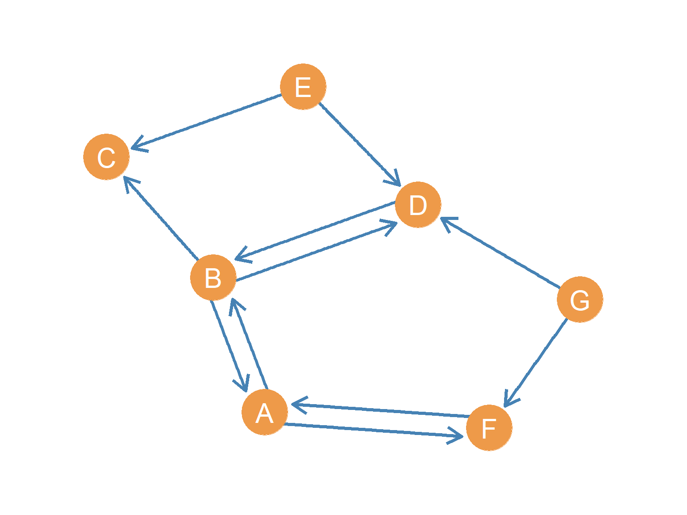
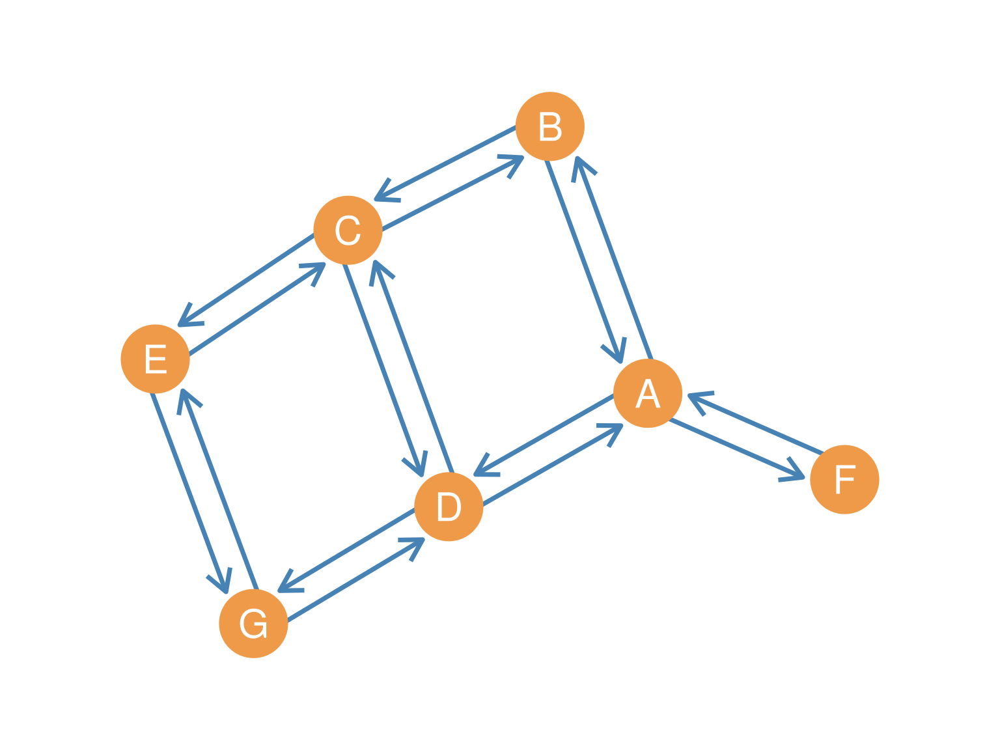
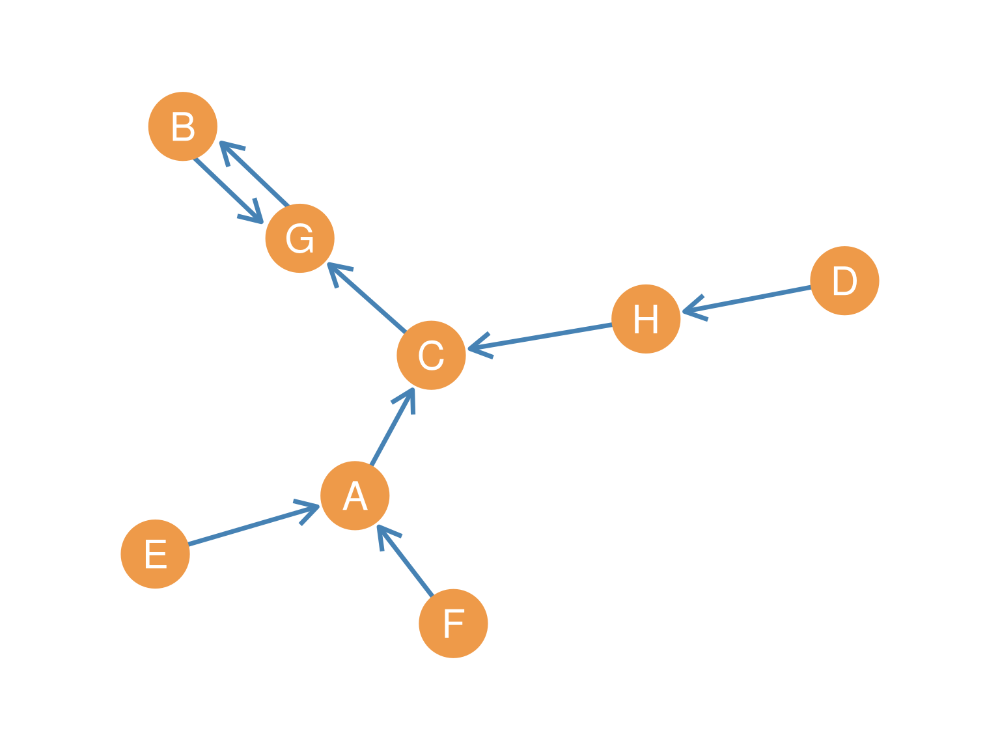
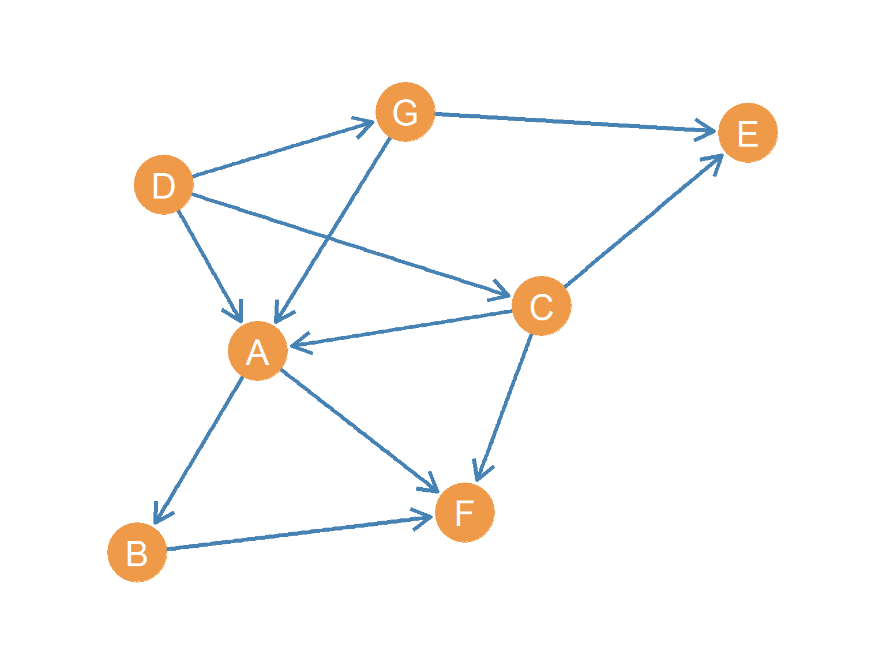
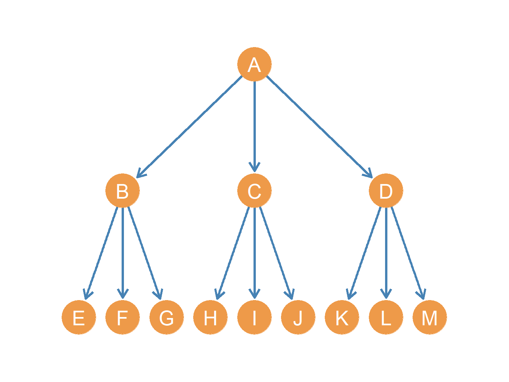

12 Directed Graphs
12.1 Introduction to Directed Graphs (Digraphs)
In our everyday social lives, many relationships do not flow symmetrically. While a business partnership or a co-authorship on a paper is naturally mutual, other interactions are inherently directional. Consider giving advice, sending an email, lending money, or nominating a colleague as a close friend. In all these cases, one person initiates the connection, but the recipient may or may not return the favor. To represent these directional ties, we use directed graphs (also commonly referred to as digraphs).
Unlike undirected graphs where edges are simple lines connecting two vertices, a directed graph uses arrows (often called arcs or directed edges) that point from a source node (the sender of the tie) to a destination node (the receiver). This means that the order of the nodes matters: a directed edge from \(A\) to \(B\) (written as the ordered pair \((A, B)\)) is a completely different relationship from a directed edge from \(B\) to \(A\) (written as \((B, A)\)). If a digraph contains no loops (where a node connects to itself) and has at most one directed edge from any sender to any receiver, we refer to it as a simple directed graph.
Figure 12.1 shows a point-and-line diagram of a digraph representing a simple directed social network.

If we view this network as an advice network within an organization (Cross et al. 2001), directionality immediately reveals the social dynamics at play. For instance, we can see that node \(E\) sends an arrow to node \(D\) (meaning \(E\) seeks advice from \(D\)), but \(D\) does not send an arrow back to \(E\). This lack of reciprocity is common in formal hierarchies, where advice-seeking typically flows upward to more experienced or authoritative actors, reflecting status and power differentials. On the other hand, the mutual arrows between \(A\) and \(B\) represent a reciprocal advising relationship, suggesting a balanced peer-to-peer exchange where both parties value each other’s expertise.
12.2 Subgraphs in Directed Graphs
Before diving into how individual nodes navigate directed networks, let’s explore how we can examine smaller portions of a directed graph. In many real-world applications, we are not interested in the entire network, but rather in a specific subset of actors or a particular set of relationships. In graph theory, we analyze these sub-structures using the concept of subgraphs.
A directed subgraph \(H = (V_H, E_H)\) of a directed graph \(G = (V, E)\) is simply a network formed by choosing a subset of nodes \(V_H\) from the original network (\(V_H \subseteq V\)) and a subset of directed edges \(E_H\) (\(E_H \subseteq E\)). The only rule is that any edge we include in our subgraph must connect nodes that are also included in the subgraph.
For example, let’s say we are studying the communication network of a large corporation (\(G\)), but we want to focus specifically on the mentoring relationships within the management team. If we select a subset of managers (\(V_H\)) and only look at the directed mentoring links between them (\(E_H\)), we have constructed a directed subgraph.
12.2.1 Induced Subgraphs in Directed Graphs
A particularly important type of subgraph is the induced directed subgraph. To create an induced subgraph, we select a subset of nodes \(V_H\) from the main graph, and then we must include every single directed edge from the original graph that connects those chosen nodes. In other words, we do not filter or select edges; if an arrow exists between two of our chosen nodes in the main network, it must be present in the induced subgraph.
Sociologically, an induced subgraph represents the complete local network of a sub-group. For instance, if we want to understand the informal advice dynamics within the marketing department of a firm, we would select the marketing staff as our node subset. The induced subgraph on this group will show all advising ties that occur strictly among the marketing team members, ignoring any ties that go to other departments.
Let’s look at a concrete example using our reference network in Figure 12.1.
Suppose we choose a subset of nodes \(V_H = \{A, B, D, E\}\).
If we construct a simple subgraph \(H_1\) by selecting these nodes and only including the directed edges \(A \rightarrow B\), \(B \rightarrow A\), and \(B \rightarrow D\), we have a valid directed subgraph. We have chosen a subset of nodes and a subset of edges, and all edges connect nodes in our set.
However, if we want to find the induced directed subgraph on the set \(\{A, B, D, E\}\), we must go back to the original network in Figure 12.1 and pull all arrows that run between these four nodes. Looking at the main graph, we find: 1. \(A \rightarrow B\) and \(B \rightarrow A\) (the reciprocal pair between \(A\) and \(B\)) 2. \(B \rightarrow D\) and \(D \rightarrow B\) (the reciprocal pair between \(B\) and \(D\)) 3. \(E \rightarrow D\) (the one-way tie from \(E\) to \(D\))
Thus, the induced directed subgraph \(H_2\) on the node set \(\{A, B, D, E\}\) must contain all five of these directed edges. Notice that we exclude the edges involving \(C\), \(F\), and \(G\) (such as \(B \rightarrow C\), \(A \rightarrow F\), or \(G \rightarrow D\)), because those nodes are not members of our subset.
12.3 Node Neighborhoods in Directed Graphs
In an undirected graph, a node’s neighborhood is simply the set of other nodes it is connected to. However, in a directed network, directionality splits this concept in two. We must distinguish between the people who send ties to a node and the people who receive ties from that node. Think of a Twitter account: your followers (who receive your updates) form a very different group from the people you follow (whose updates you receive). In graph theory, we capture this distinction through in-neighborhoods and out-neighborhoods.
The in-neighborhood of a node \(v\), written as \(N^{in}(v)\), consists of all the nodes that send a directed edge toward it. Sociologically, in an office advice network, a person’s in-neighborhood represents their “advice-seekers”—the group of people who come to them for help. For example, looking at our reference network in Figure 12.1, we can see that node \(D\) receives arrows from nodes \(B\), \(E\), and \(G\). Therefore, its in-neighborhood is \(N^{in}(D) = \{B, E, G\}\).
Conversely, the out-neighborhood of a node \(v\), written as \(N^{out}(v)\), consists of all the nodes to which \(v\) sends a directed edge. In our office context, this represents a person’s “advice-givers”—the group of people they go to when they need help. In Figure 12.1, node \(B\) sends arrows to \(A\), \(C\), and \(D\), which gives us the out-neighborhood set \(N^{out}(B) = \{A, C, D\}\).
Notice that a node will only appear in both neighborhoods of another node if there is a mutual, reciprocal relationship between them. For instance, if we look at node \(F\) in Figure 12.1, its out-neighborhood is \(\{A\}\) and its in-neighborhood is \(\{A, G\}\). Node \(A\) is the only node that appears in both sets, which directly reflects the reciprocal advising partnership between \(A\) and \(F\).
12.3.1 Neighborhood Intersections
Just as we do with undirected networks, we can analyze the structural overlap between different actors by intersecting their neighborhoods. Because directed graphs have two types of neighborhoods, we can look at two distinct kinds of overlap, each carrying a different social meaning.
First, the in-neighborhood intersection (\(N^{in}(u) \cap N^{in}(v)\)) finds the common senders who target both \(u\) and \(v\). In a social setting, if two individuals share many of the same senders, it suggests they occupy a similar role or share a common audience. For instance, let’s look at nodes \(C\) and \(D\) in Figure 12.1. Node \(C\) receives ties from \(B\) and \(E\), so \(N^{in}(C) = \{B, E\}\). Since \(N^{in}(D) = \{B, E, G\}\), their in-neighborhood intersection is:
\[ N^{in}(C) \cap N^{in}(D) = \{B, E\} \]
This tells us that both \(C\) and \(D\) are sought out by the exact same advisors, \(B\) and \(E\).
Second, the out-neighborhood intersection (\(N^{out}(u) \cap N^{out}(v)\)) identifies the common targets to which both \(u\) and \(v\) send ties. Sociologically, this indicates shared outreach or common sources of advice. If we intersect the out-neighborhoods of \(C\) and \(D\) in Figure 12.1, we find:
\[ N^{out}(C) \cap N^{out}(D) = \emptyset \]
Because node \(C\) is a “sink” that sends no outgoing ties (\(N^{out}(C) = \emptyset\)), there is no overlap. However, if we look at nodes \(E\) and \(G\) (where \(N^{out}(E) = \{C, D\}\) and \(N^{out}(G) = \{F, D\}\)), their out-neighborhood intersection is:
\[ N^{out}(E) \cap N^{out}(G) = \{D\} \]
This shows that both \(E\) and \(G\) turn to node \(D\) for advice, making \(D\) a shared resource for them.
12.3.2 Neighborhood Unions
We can also look at the union of neighborhoods to find the total reach or combined coverage of two nodes. The in-neighborhood union (\(N^{in}(u) \cup N^{in}(v)\)) combines all unique nodes that send ties to either \(u\) or \(v\) (or both). For nodes \(C\) and \(D\) in Figure 12.1, this union is:
\[ N^{in}(C) \cup N^{in}(D) = \{B, E, G\} \]
This represents the entire collective audience of both nodes. Similarly, the out-neighborhood union (\(N^{out}(u) \cup N^{out}(v)\)) combines all unique nodes that receive ties from either \(u\) or \(v\). For nodes \(E\) and \(G\), this is:
\[ N^{out}(E) \cup N^{out}(G) = \{C, D, F\} \]
This represents the total combined set of people from whom \(E\) and \(G\) seek advice.
12.4 Node Degree in Directed Graphs
Because each node in a directed graph is associated with two different sets of neighbors, we can calculate two distinct measures of degree for every actor. These measures correspond directly to the sizes of their in-neighborhood and out-neighborhood sets.
The first measure is indegree (\(k^{in}_i\)), which counts the number of directed edges pointing to node \(i\) as their destination. In a social network, indegree is often interpreted as a measure of popularity, prestige, or authority; it shows how many people nominate or seek out that individual. Mathematically, it is the size of the node’s in-neighborhood:
\[ k^{in}_i = |N^{in}(i)| \tag{12.1}\]
The second measure is outdegree (\(k^{out}_i\)), which counts the number of directed edges originating from node \(i\) as their source. Sociologically, outdegree reflects an actor’s activity, sociability, or expansiveness; it indicates how many ties they actively initiate. Mathematically, it is the size of the node’s out-neighborhood:
\[ k^{out}_i = |N^{out}(i)| \tag{12.2}\]
12.4.1 Walkthrough of Individual Node Degrees
To see how these play out, let’s calculate the degrees for a few key nodes in our reference network (Figure 12.1).
Let’s start with node \(B\). Looking at the arrows, node \(B\) receives incoming ties from \(A\) and \(D\), so its in-neighborhood is \(N^{in}(B) = \{A, D\}\), giving it an indegree of \(k^{in}_B = 2\). At the same time, \(B\) sends outgoing ties to \(A\), \(C\), and \(D\), so its out-neighborhood is \(N^{out}(B) = \{A, C, D\}\), giving it an outdegree of \(k^{out}_B = 3\). This means \(B\) is highly active in both sending and receiving connections.
Now consider node \(D\). It receives ties from \(B\), \(E\), and \(G\), so its in-neighborhood is \(N^{in}(D) = \{B, E, G\}\), yielding an indegree of \(k^{in}_D = 3\). However, \(D\) only sends a single tie back to \(B\), so its out-neighborhood is \(N^{out}(D) = \{B\}\), giving it an outdegree of \(k^{out}_D = 1\). Node \(D\) is the most sought-after advisor in this small group, despite being relatively quiet in sending out ties.
Finally, let’s look at node \(C\). It receives arrows from \(B\) and \(E\), meaning its in-neighborhood is \(N^{in}(C) = \{B, E\}\), which gives it an indegree of \(k^{in}_C = 2\). On the other hand, \(C\) sends no outgoing arrows whatsoever, so its out-neighborhood is empty (\(N^{out}(C) = \emptyset\)), which gives it an outdegree of \(k^{out}_C = 0\). Node \(C\) acts purely as a consumer of advice without offering advice to anyone else.
12.4.3 Degree Sets, Sequences, and Ranges
If we calculate the degrees of all nodes in a directed network, we get two separate vectors of length \(n\): the indegree set (\(\mathbf{k}^{in}\)) and the outdegree set (\(\mathbf{k}^{out}\)). For the directed graph in Figure 12.1, these sets are:
\[ \mathbf{k}^{in} = (k^{in}_A, k^{in}_B, k^{in}_C, k^{in}_D, k^{in}_E, k^{in}_F, k^{in}_G) = (2, 2, 2, 3, 0, 2, 0) \]
\[ \mathbf{k}^{out} = (k^{out}_A, k^{out}_B, k^{out}_C, k^{out}_D, k^{out}_E, k^{out}_F, k^{out}_G) = (2, 3, 0, 1, 2, 1, 2) \]
To get a clearer picture of the overall network structure, we can sort these sets in descending order to create degree sequences. Sorting the indegree set gives us the indegree sequence \(\mathbf{d}^{in} = (3, 2, 2, 2, 2, 0, 0)\), which ranks actors by their popularity. Sorting the outdegree set gives us the outdegree sequence \(\mathbf{d}^{out} = (3, 2, 2, 2, 1, 1, 0)\), which ranks them by their activity.
We can also look at the extreme points of these sequences. In our network, the maximum indegree is \(k^{in}_{max} = 3\) (held by the popular node \(D\)), while the minimum indegree is \(k^{in}_{min} = 0\) (held by the quiet nodes \(E\) and \(G\)). The maximum outdegree is \(k^{out}_{max} = 3\) (held by node \(B\)), and the minimum outdegree is \(k^{out}_{min} = 0\) (held by node \(C\)).
Subtracting the minimum from the maximum gives us the range, which measures the gap between the most connected and least connected actors. For our network, both the indegree range (\(k^{in}_r = 3 - 0 = 3\)) and the outdegree range (\(k^{out}_r = 3 - 0 = 3\)) indicate a moderate spread between the star players and the peripheral members of the group.
12.5 Directed Graph Metrics
When we shift from undirected to directed graphs, basic network-wide metrics like size, density, and average degree take on new mathematical and conceptual meanings.
First, consider the maximum size (\(m_{max}\)) of a directed network. In an undirected graph of order \(n\), the maximum number of edges is \(\frac{n(n - 1)}{2}\) because edges are symmetric. In a directed graph, however, connections can run in both directions (e.g., \(u \rightarrow v\) and \(v \rightarrow u\) are distinct edges). This means that a directed graph has exactly double the capacity of an undirected graph of the same size, which is expressed as:
\[ m_{max} = n(n - 1) \tag{12.3}\]
For our reference network in Figure 12.1, which has \(n = 7\) nodes, the maximum size is \(7(7 - 1) = 42\) possible directed edges.
Using this maximum size, we can calculate the directed graph density (\(d(G)^d\)), which is the proportion of potential directed ties that are actually observed in the network:
\[ d(G)^d = \frac{m}{n(n-1)} \tag{12.4}\]
In our reference network, we observe \(m = 11\) directed edges out of the 42 possible, resulting in a density of:
\[ d(G)^d = \frac{11}{42} \approx 0.262 \quad (26.2\%) \]
From a sociological perspective, this tells us that 26.2% of all possible advising relationships in this office have been realized. If we were to randomly select two employees, \(u\) and \(v\), there is a 26.2% chance that \(u\) goes to \(v\) for advice.
We can also look at the average degree of the network. Because each node has both an indegree and an outdegree, we might expect to calculate two different averages: an average indegree (\(\bar{k}^{in}\)) and an average outdegree (\(\bar{k}^{out}\)). However, one of the most fundamental rules of graph theory is that these two averages are always mathematically identical:
\[ \bar{k}^{in} = \bar{k}^{out} = \bar{k} = \frac{m}{n} \tag{12.5}\]
This identity must hold because every directed arrow in a graph has exactly one starting point (adding 1 to the network’s total outdegree) and exactly one ending point (adding 1 to the network’s total indegree). Consequently, the sum of all indegrees in the network must equal the sum of all outdegrees, and both sums must equal the total number of edges \(m\). For our reference network of 7 nodes and 11 edges, the average degree is:
\[ \bar{k} = \frac{11}{7} \approx 1.57 \]
This means that, on average, a member of this network seeks advice from 1.57 colleagues, and is also sought out for advice by 1.57 colleagues.
12.6 Degree Variance in Directed Graphs
Measuring the average degree of a network gives us a general sense of how active its members are, but it does not tell us how that activity is distributed. For example, is everyone equally active, or do a few dominant players hold all the ties? To capture this inequality, we compute the degree variance, which measures how much individual node degrees deviate from the network average. In a directed graph, because nodes have two distinct degrees, we must calculate two separate measures: indegree variance (\(\mathcal{v}^{in}(G)\)) and outdegree variance (\(\mathcal{v}^{out}(G)\)).
The indegree variance measures the inequality in incoming ties—sociologically, the concentration of popularity or prestige across nodes. It is calculated by taking the average of the squared deviations of each node’s indegree from the average degree:
\[ \mathcal{v}^{in}(G) = \frac{\sum_i (k^{in}_i - \bar{k})^2}{n} \tag{12.6}\]
Similarly, the outdegree variance measures the inequality in outgoing ties—the concentration of sociability or outreach:
\[ \mathcal{v}^{out}(G) = \frac{\sum_i (k^{out}_i - \bar{k})^2}{n} \tag{12.7}\]
Note that because the average indegree and outdegree are always equal (\(\bar{k}^{in} = \bar{k}^{out} = \bar{k}\)), both formulas use the same benchmark average, but the actual node values (\(k^{in}_i\) and \(k^{out}_i\)) vary independently, resulting in two distinct variances.
Let’s compute both variances for our reference network in Figure 12.1 (where \(n = 7\), \(m = 11\), and \(\bar{k} \approx 1.57\)). Table 12.1 lists each node’s indegree, outdegree, and squared deviations from this average.
| Node | Indegree (\(k^{in}\)) | Squared Deviation \((k^{in} - 1.57)^2\) | Outdegree (\(k^{out}\)) | Squared Deviation \((k^{out} - 1.57)^2\) |
|---|---|---|---|---|
| A | 2 | 0.18 | 2 | 0.18 |
| B | 2 | 0.18 | 3 | 2.04 |
| C | 2 | 0.18 | 0 | 2.47 |
| D | 3 | 2.04 | 1 | 0.33 |
| E | 0 | 2.47 | 2 | 0.18 |
| F | 2 | 0.18 | 1 | 0.33 |
| G | 0 | 2.47 | 2 | 0.18 |
| Sum | 11 | 7.71 | 11 | 5.71 |
Using the sums of the squared deviations from the table, we find the following variances:
\[ \mathcal{v}^{in}(G) = \frac{7.71}{7} \approx 1.10 \]
\[ \mathcal{v}^{out}(G) = \frac{5.71}{7} \approx 0.82 \]
Comparing these two results reveals an interesting sociological insight: the indegree variance (\(1.10\)) is higher than the outdegree variance (\(0.82\)). This indicates that popularity and prestige are more heavily concentrated in this network than sociability. In other words, while employees are relatively similar in how often they seek out advice (with most sending 1 to 3 ties), they are highly unequal in how often they are sought out. A single “expert” (node \(D\)) receives the lion’s share of nominations, while others (like \(E\) and \(G\)) receive none.
12.7 Special Classes of Directed Graphs
In the same way that games are defined by their rules, we can define special classes of directed graphs by placing specific constraints on their structure. These constraints might limit who can send a tie, force relationships to be reciprocal, or forbid reciprocity entirely. Each set of rules produces a unique network structure that mirrors a specific type of social system.
12.7.1 Symmetric Directed Graphs
A symmetric directed graph is built under the rule of mandatory reciprocity: if an edge exists from node \(u\) to node \(v\), then an edge must also exist from \(v\) to \(u\). This is the digraph equivalent of a standard undirected graph. We often see this structure in surveys that measure strong social ties like “close friendship.” If a researcher only counts a friendship if both parties nominate each other, the resulting network is forced to be symmetric.

Figure 12.2 shows a symmetric directed graph containing eight nodes and sixteen bi-directional edges (which represent thirty-two individual directed arcs). Because every connection is mutual, the graph-wide flow of information is highly fluid, and there are no structural bottlenecks or one-way dead ends.
12.7.2 Functional Graphs
A functional graph is created by imposing a strict constraint on activity: every single node in the network must have an outdegree of exactly one (\(k^{out} = 1\)). This means that every actor is required to direct exactly one tie to one specific target.
This type of graph has important applications in anthropology, particularly in the study of kinship exchange systems in traditional societies where strict marriage rules dictate which clan a family must marry into (Hage and Harary 1996). It also describes systems where every employee reports to exactly one supervisor, or where every computer terminal is routed to a single gateway server.

Figure 12.3 shows a functional graph with eight nodes. An interesting mathematical consequence of this structure is that the number of nodes (\(n\)) is always exactly equal to the number of directed edges (\(m\)). In this case, \(n = m = 8\). Because everyone has exactly one outgoing tie, the edges cannot exceed the number of nodes, leading to a network of chains and cycles where information or resources flow in a single, predictable loop.
12.7.3 Oriented Graphs
An oriented graph is the structural opposite of a symmetric graph: it strictly forbids reciprocity. If there is a directed edge from \(u\) to \(v\), there cannot be a directed edge from \(v\) to \(u\).
This structure represents relationships that are inherently unequal or competitive. For example, in a sports tournament where nodes represent teams and directed arrows point from the winner to the loser, reciprocity is physically impossible (a team cannot both beat and lose to another in the same match). Similarly, strict status hierarchies (like pecking orders in animal groups or seniority ladders in military organizations) are oriented graphs.

As shown in Figure 12.4, every connected pair in an oriented graph is linked by a one-way street. Information or authority flows strictly in one direction, creating clear hierarchies and preventing mutual exchanges.
12.7.4 Anti-Symmetric Ties and Directed Tree Graphs
A relation is anti-symmetric if reciprocity is strictly forbidden by the very definition of the tie. Consider the relationship “being the parent of” or “being the father of.” If person \(A\) is the father of person \(B\), it is biologically impossible for \(B\) to be the father of \(A\). When we trace these anti-symmetric ties across generations or levels of authority, they naturally form a directed tree graph (which we explore in more detail in Chapter 16).
We see directed trees in family genealogies, but also in corporate organizational charts where subordinates take orders from a single supervisor.

In the tree graph shown in Figure 16.1, node \(A\) sits at the top as the root (the earliest ancestor or CEO). A defining structural property of a directed tree is that every node except the root has an indegree of exactly one (\(k^{in} = 1\)), representing a single father or a single direct manager. However, nodes are free to have multiple out-neighbors (representing multiple children or multiple direct reports). This structure ensures a clean, hierarchical cascade of authority or inheritance without any cross-cutting or conflicting paths.
12.4.2 Social Roles: Receivers, Carriers, and Transmitters
By comparing these two degrees, we can classify actors into distinct social roles (Harary et al. 1965) based on how they process flows in the network.
Transmitters are actors who send ties but do not receive any. They have an outdegree greater than zero, but an indegree of zero (\(k^{in} = 0, k^{out} > 0\)). In Figure 12.1, nodes \(E\) and \(G\) are transmitters. Both send out advice queries (node \(E\) has \(k^{out}_E = 2\) and node \(G\) has \(k^{out}_G = 2\)), but neither is consulted by anyone else (\(k^{in}_E = 0\) and \(k^{in}_G = 0\)). In an information network, transmitters act as pure source nodes or broadcasters.
Receivers are actors who receive ties but do not send them. They have an indegree greater than zero, but an outdegree of zero (\(k^{in} > 0, k^{out} = 0\)). Node \(C\) is a receiver (\(k^{in}_C = 2, k^{out}_C = 0\)). In a team setting, a receiver acts as an information “sink”—someone who consumes resources but does not pass them along.
Carriers are the intermediaries who both receive and send ties (\(k^{in} > 0, k^{out} > 0\)). In our graph, nodes \(A\), \(B\), \(D\), and \(F\) are all carriers. For example, node \(A\) has an indegree of 2 and an outdegree of 2, while node \(F\) has an indegree of 2 and an outdegree of 1. These nodes act as brokers or relays, facilitating the flow of advice or information through the network.